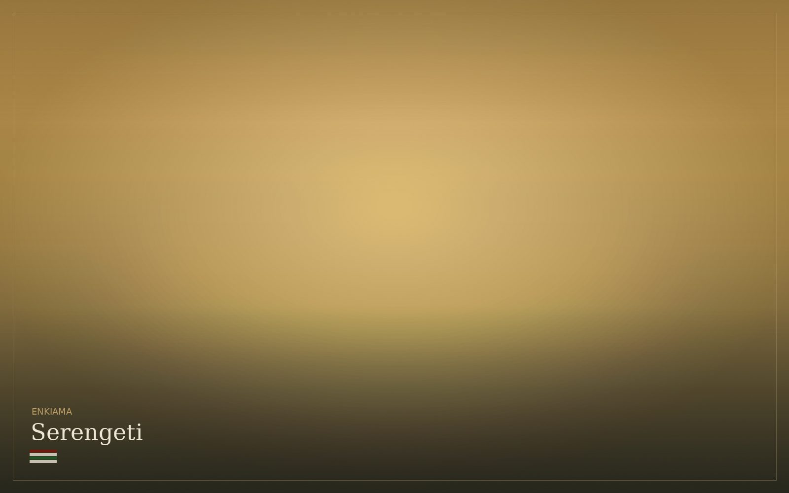
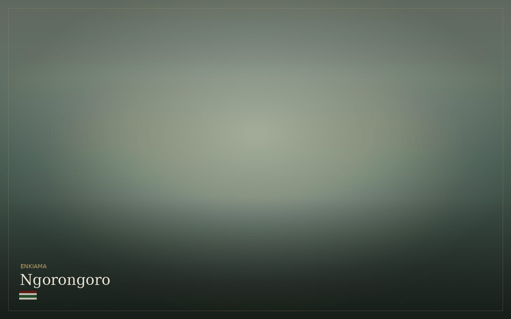
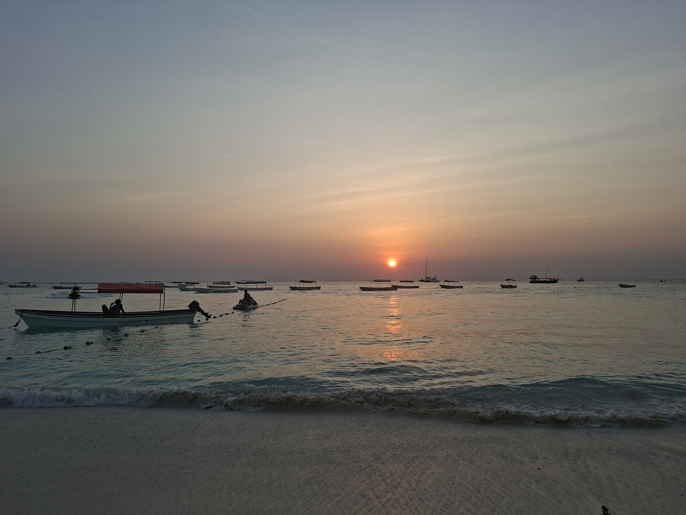

Tanzania · Mountain to coast · One country
A world, not a destination.
Volcanic highlands, Rift lakes, savanna, forest and the Swahili coast sit within one country. Tanzania changes as you cross it; those transitions are the journey.
Tanzania · Mountain to coast · One country
Volcanic highlands, Rift lakes, savanna, forest and the Swahili coast sit within one country. Tanzania changes as you cross it; those transitions are the journey.
 Kilimanjaro · 5,895 m
Kilimanjaro · 5,895 m
Why Tanzania
Tanzania has the Serengeti. It has Kilimanjaro. It has Zanzibar. These are things that belong to any atlas. What an atlas cannot capture is the quality of light in the dry season, the silence after a herd passes, the altitude smell of the Kilimanjaro foothills, the warmth of a Swahili greeting on the coast.
Most people who travel here for the first time come for one of those three things. Most people who return come for something else entirely: the human warmth, the cultural depth, the feeling that they belong to this place in a way they cannot quite explain.
Mountain, savanna, crater highlands, lived culture and coast are not separate products. They are connected parts of one country, and the most coherent journeys use those transitions rather than treating each place as an isolated stop.
Trekking · Highland culture · Coffee farms
Africa’s highest peak and the Chagga cultural corridor winding through its lower slopes. At 1,700 metres, the coffee farms begin. The banana groves. The volcanic red soil. The Chagga people, who have farmed this mountain for generations and receive guests at their tables as a matter of course.
You do not need to summit to be changed by Kilimanjaro. The mountain rearranges your sense of scale whether you reach the top or not. The silence above the cloud line is unlike anything the savanna offers.
Wildlife · Migration · Open plain
Two entirely different moods. The Serengeti — defined by the greatest land migration on earth, where 1.5 million wildebeest and 350,000 zebra move in a cycle as old as the ecosystem itself. And Tarangire — quieter, denser, defined by elephant highways and ancient baobabs and a silence the more famous parks have lost.
Our guides have followed both for decades. They know where the lion will be at dawn. They know which baobab the elephants return to. That knowledge is the difference between watching and belonging.


Wildlife · Geology · Ancient world
A collapsed volcano three million years in the making, now a self-contained ecosystem holding 25,000 animals within its walls. You descend through cloud forest, drop 600 metres, and emerge into a world that operates entirely by its own logic.
The alkaline lakes are pink with flamingos. The lions have never learned to leave. The landscape is ancient: the kind of ancientness that makes your own timeline feel brief and unimportant in the best possible way.
Culture · Homestays · Community life
The world most safari itineraries treat as backdrop or bonus. Homestays with Chagga families at altitude. Evenings in Maasai bomas on the crater rim, introduced by a guide who is also a community member and whose relationship with the family precedes ours by years. Night markets in Moshi where nobody knows you are a tourist until you order badly.
When we enter a village, we bring the local guide: the person who was born there, whose access to the specific elder, the specific grove, the specific story is entirely their own. Not as a gesture. Because that morning is otherwise unavailable to anyone.

Coast · Indian Ocean · Swahili history
Stone Town’s narrow streets hold seven centuries of Swahili, Arab, Persian, Indian, and Portuguese history layered on top of each other. Zanzibar’s spice farms. Pemba’s untouched coral gardens. Warm water and a rhythm entirely different from the savanna: one hour’s flight from the Serengeti and another world entirely.
Many groups come for the safari and discover the coast on their last days. Many return for the coast alone. The Indian Ocean does something to the rhythm of a journey that no amount of spectacular wildlife can replicate.
Seasonality
There is no single safari season. June to October is drier and busier; November changes the light; December to March brings green plains and calving; April and May are quieter and wetter. The right month depends on what you want to see and how you prefer to travel.
June – October
Grass dries to gold, animals gather at shrinking water, the air clears, Kilimanjaro sheds its cloud. The Mara crossings peak in July and August. The classic image of Tanzania, and the busiest, which is its only drawback.
The migration · Clear summits · Concentrated wildlife
November
The short rains arrive in brief afternoon bursts that clear as fast as they come. The dust settles, the light turns cinematic, the crowds thin dramatically. One of the most underrated months in the entire calendar, and one of our favourites.
Dramatic skies · Fewer travellers · Lower rates
December – March
The southern Serengeti turns emerald. The wildebeest calve: hundreds of thousands of births in a few weeks, and the predators that follow them. The coast is warm and clear. A completely different Tanzania to the dry season, and a profoundly alive one.
The calving · Green plains · Coast at its best
April – May
The long rains. The least-travelled window, and for the right person, the most rewarding. The land is at its most lush, the light at its softest, the camps at their quietest, the rates at their gentlest. For travellers who want Tanzania almost to themselves.
Solitude · Lush landscape · The quiet country
Geology
The East African Rift Valley runs through Tanzania like a spine: a geological seam that has been pulling the continent apart for thirty million years. Ngorongoro is its collapsed offspring. Kilimanjaro rose independently, a volcanic anomaly sitting at the edge of the rift’s shoulder. The Serengeti sits on a ancient craton that has not moved in half a billion years.
Understanding the geology changes what you see. When you understand why the crater exists, descending into it becomes something else entirely. When you know what the rift means, the scale of the savanna makes a different kind of sense.
Ecology
Montane forest, cloud forest, moorland, alpine desert, and summit ice on Kilimanjaro alone. Acacia savanna, dry woodland, and riverine forest on the plains. Mangrove, coral reef, and open ocean on the coast. No other country of similar size holds this concentration of distinct ecological zones.
This is why Tanzania rewards the traveller who moves across worlds rather than staying in one. Each transition is a complete change of register: of light, sound, smell, temperature, and the kind of attention the landscape asks of you.
People
More than 120 ethnic groups live in Tanzania. These three are not a summary of the country; they are communities that commonly intersect with journeys in the north, on Kilimanjaro and on the coast.
The plateau people
Seminomadic pastoralists whose traditional territory spans the crater rim and the open savanna. A warrior culture built around cattle, land, and a relationship with the ecosystem that long predates any national park boundary. Our Maasai partners carry this knowledge in everything they do.
The mountain people
Bantu farmers who have cultivated the southern slopes of Kilimanjaro for centuries: one of the most intensively farmed mountain environments on the continent. The Kibosho corridor, where our family partner lives, produces some of the finest coffee in Africa from volcanic soil at 1,700 metres.
The coast people
A maritime culture formed at the intersection of the African interior, the Arab world, Persia, India, and Portugal across a thousand years of Indian Ocean trade. Stone Town is their most legible monument. The Swahili language, now Tanzania’s national tongue, was their most enduring creation, and one of the warmest you will ever encounter.
Begin here
Tell us who is travelling, when you can travel, the pace that suits you and which parts of Tanzania matter most. We will help connect those into one coherent route and explain where local specialists or community partners add something genuinely useful.